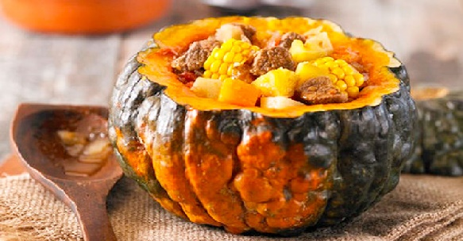

<!DOCTYPE html>
<html lang="en" dir="ltr">
  <head>
    <meta charset="utf-8">
    <title>Carbonada Salteña</title>
    <meta name="description" content="carbonada salteña">
    <meta name="keywords" content="receta, receta salteña, carbonada, comidas regionales, salta, provincia de salta">
    <meta name="author" content="federico gianfelici">
    <link rel="stylesheet" href="./css/estilos.css">
    <meta name="viewport" content="width=device-width, initial-scale=1, maximum-scale=1.0">
    <link rel="preconnect" href="https://fonts.googleapis.com">
    <link rel="preconnect" href="https://fonts.gstatic.com" crossorigin>
    <link href="https://fonts.googleapis.com/css2?family=Lobster+Two&display=swap" rel="stylesheet">
    <link rel="preconnect" href="https://fonts.gstatic.com" crossorigin>
    <link href="https://fonts.googleapis.com/css2?family=Lobster+Two&display=swap" rel="stylesheet">
    <link rel="preconnect" href="https://fonts.googleapis.com">
    <link rel="preconnect" href="https://fonts.gstatic.com" crossorigin>
    <link href="https://fonts.googleapis.com/css2?family=Lobster+Two&family=Roboto:wght@300&family=Rowdies:wght@300&display=swap" rel="stylesheet">
  </head>
  <body>

  </body>
</html>

<header>

<div class="">
  

</div>

<div class="">
  <h1 class="titulo1">Receta Típica de Salta</h1>

</div>

<div class="margensuperior">


</div>

</header>


<nav>

<a href="./receta/receta.pdf"target="_blank" >Descargar receta</a>

<a href="https://www.youtube.com/watch?v=Um18n_dWNW8"target="_blank">Tutorial</a>

<a href="https://www.salta.gob.ar/prensa/noticias"target="_blank">Gobierno de Salta</a>

<a href="https://cookpad.com/ar/buscar/salta"target="_blank">Otras Recetas</a>

</nav>

<section>

<div class="">

  <h2 class="marron" class="subtitulo">Carbonada</h2>

</div>

<div class="">

  
</div>

<div class="">

  <h2 class="marron" class="subtitulo">Ingredientes</h2>


</div>

  <ul class="texto">
    <li>1/2 Kg. de zapallo amarillo</li>
    <li>1/4 kg. de carne vacuna blanda</li>
    <li>3 choclos</li>
    <li>1 batata mediana</li>
    <li>1 manzana verde madura</li>
    <li>1 cebolla en cabeza (tamaño chico)</li>
    <li>100 gr. de orejones frescos</li>
    <li>100 gr. de arroz</li>
    <li>sal, pimienta, grasa derretida, agua</li>
  </ul>
  <br>
  <h2 class="marron" class="subtitulo">Paso a paso de la preparación</h2>
  <br>
  <ol class="texto">
    <li>Pasos previos: Picar la cebolla muy fina, la carne en dados y desgranar los choclos (mazorca de maíz)</li>
    <li>Cortar en dados el zapallo, la batata y la manzana pelada. Poner en remojo los orejones (con algunas horas de anticipación)</li>
    <li>Lavar el arroz</li>
    <li>Colocar la grasa derretida en una cacerola y llevar al fuego</li>
    <li>Agregar la cebolla, dejar que se dore, luego poner la carne picada y los granos de choclo; salpimentar a gusto y dejar cocinar durante media hora</li>
    <li>Luego se agrega el zapallo, los orejones y la batata</li>
    <li>Cocinar unos 15 minutos</li>
    <li>Por último incorporar el arroz y la manzana. Añadir agua hirviendo en cantidad necesaria y cocinar unos  20” más.</li>
  </ol>
  <br>
  <h3 class="negro"> Sugerencia: al servir, se pueden agregar  huevos duros picados</h3>

</section>

<aside>

  
  <h3 class="negro">La carbonada es un plato típico de la cocina criolla, principalmente del noroeste del país. Tanto Chile como Bolivia tienen su propia versión. Acá va la que corresponde a la provincia de <a href="https://www.salta.gob.ar/"target="_blank">Salta</a>. El paso a paso para deleitar a tu familia.</h2>
  <h2 class="marron" class="subtitulo">Video explicativo</h2>
  <iframe width="560" height="315" class="youtube" src="https://www.youtube.com/embed/Um18n_dWNW8" title="YouTube video player" frameborder="0" allow="accelerometer; autoplay; clipboard-write; encrypted-media; gyroscope; picture-in-picture; web-share" allowfullscreen></iframe>

<a class="fixed" href="https://api.whatsapp.com/"target="_blank"> </a>

</aside>


<footer>

<iframe class="mapa"src="https://www.google.com/maps/embed?pb=!1m18!1m12!1m3!1d115903.41005611098!2d-65.43062865!3d-24.7960848!2m3!1f0!2f0!3f0!3m2!1i1024!2i768!4f13.1!3m3!1m2!1s0x941bc3a35151b7f9%3A0xa5cd992cd587f206!2sSalta!5e0!3m2!1ses-419!2sar!4v1684266424607!5m2!1ses-419!2sar" width="200" height="200" style="border:0;" allowfullscreen="" loading="lazy" referrerpolicy="no-referrer-when-downgrade"></iframe>

<div class="margeninferior">

<div class="">
  

</div>

<div class="">
  

</div>

<div class="">
  


</div>

<div class="">

  

</div>

</div>


<div class="datos">

<h3 class= "contacto">Creado por Federico Gianfelici</h3>
<a class= "github" href="https://github.com/federicogianfelici/carbonada">GitHub</a>
<h3> Teléfono: 2214117657 </h3>
<h3>federicogianfelici@gmail.com</h3>

</div>

</footer>
